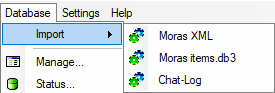

This menu item is responsible for managing the item database
Import>
1) Mora's ...
Import a database in the format of this program. Databases of older versions can also be imported.
2) Leladia 2.0
Import item data intended for Leladia's Spellcraft Calculator. Since in this format each object is in a single file, a multiple selection (press Shift or Strg) is possible in the file selection dialog.
 Note:
Weapons can not be imported here, as some of the information required by
the program is not contained in the data.
Note:
Weapons can not be imported here, as some of the information required by
the program is not contained in the data.Armor is always imported as fabric armor. This must be changed at a later date.
3) Kort's SCC
Import item data required for Kort's Spellcrafting Calculator. Here, too, each object is stored in an extra file, which is why a multiple selection is also possible here.
All references to Leladia also apply here, so no arms imports and armor only as fabric armor.
4) ChatLog
Imported items from the chat log file created by DAoC. Only items that have been moved via the item description (Shift + I) in the chat log file will be imported. When importing, there may still be a few dialogues in which various missing information is still requested.
Manage ...
Opens a dialog for managing the item database. Items can be deleted, even edited to a small extent, and exported.
Status...
Displays various data on the current item database.